Ghost of Christmas Present
Live stage dialogue opposite Scrooge as Tiny Tim.
0:39 · The Little Town of Christmas — Golden Chain Theatre
Actor · Singer · Dancer
Official acting portfolio.
Performances, footage and professional enquiries, presented for casting directors, agents and managers.
Seeking theatrical & commercial representation · happy to travel for auditions
Professional casting headshots are in production. The images shown in Face and range are a personality and range set.
Performance reel · 1:30 · Acting, singing and ensemble work
Drag, or use the arrows, to browse — click a photograph to view it full size
01 · About Wynter
Introduction · 0:37
Wynter Pearce first went on stage when she was two, in The Nutcracker. She fell in love with performing and has been taking dance and singing classes ever since.
She has done competition dance, jazz and ballet, and her first major role was Tiny Tim in the Christmas story play. It was a full production — four weeks long, three shows a week — and she had to show up every Friday, Saturday and Sunday for an entire month, which showed her ability to remember her lines and also to be consistent and on time.
I live in nature, a tiny town near Yosemite. I love nature, I love cats and dogs. I feed a crow who flies in my window and sits on my bed. I have a pet bird and a chameleon and I love be-dazzling.
My first play was when I was two and I was in the Nutcracker. There's a small theater near where I live called the Golden Chain. That's where I've been doing all my recent plays and I love going there after school.
02 · Special skills
Skills are listed only where they are genuinely held, with footage where it exists.
Solo and ensemble. Classes since age two; featured solo vocal on stage in the reel.
Jazz, ballet and competition dance since age two. Stage work throughout the reel.
Scripted stage roles from age two, including a twelve-show run as Tiny Tim.
Four-week runs, three shows a week — consistency and line-learning under a live schedule.
03 · Experience
A few of the highlights so far in my journey.
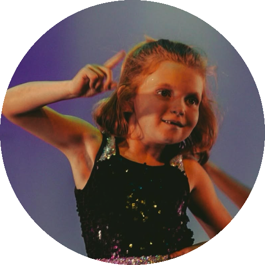
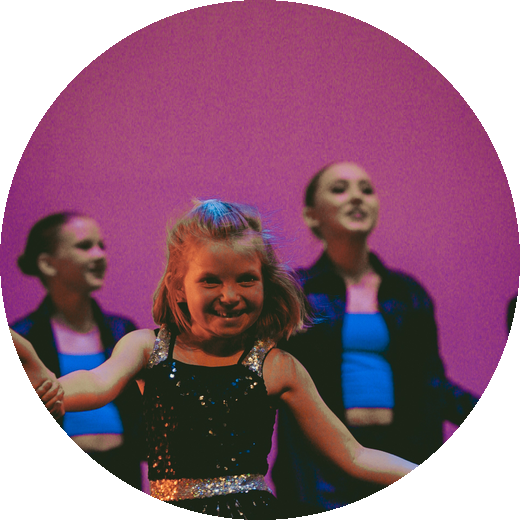
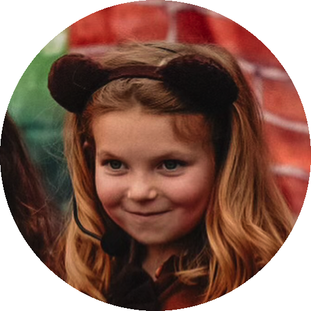
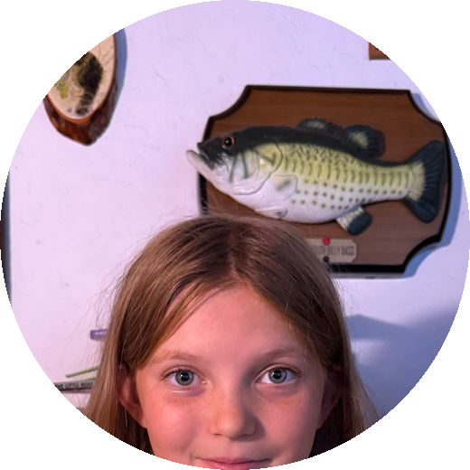
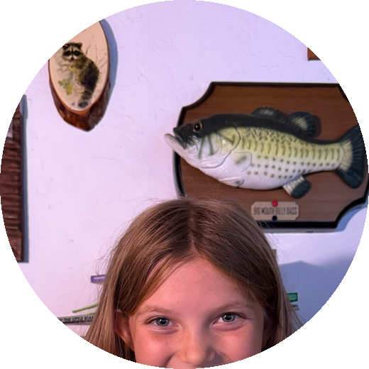
One page, ready to send to casting offices.
04 · Commercial preview
Self-taped commercial auditions — a product read, an unboxing-style demonstration and a closing to camera.
Product demonstration read, opening with the kit and closing to camera. 0:39
Warm single-take read, handling the product and closing on the brand. 0:27
These are practice self-tapes made for audition purposes rather than commissioned campaigns. Product names appear because they were the subject of the exercise.
05 · Face and range
A set of expressions captured in one session, showing the range she plays in.
The expression set below shows the range she plays in — warm, bright, comedic, theatrical and editorial.
Session footage from a single expression shoot. A casting headshot set covering distinct looks — commercial, theatrical and lighter theatrical — is the next photography step.
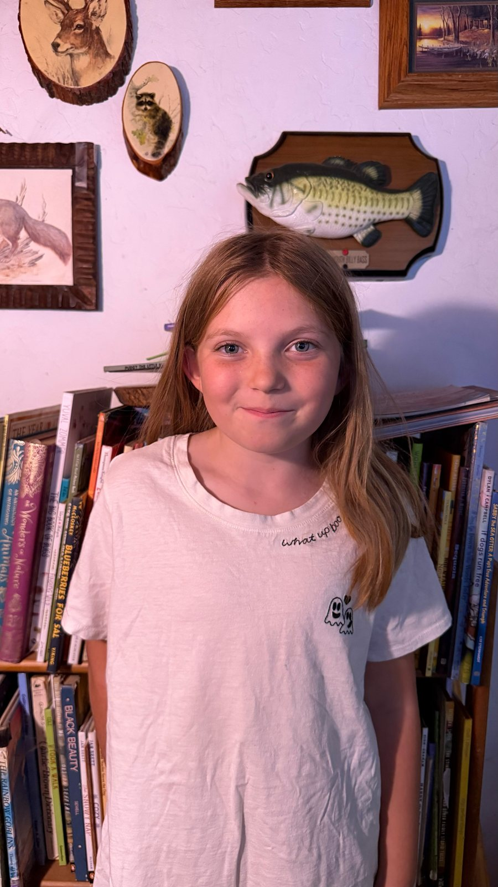
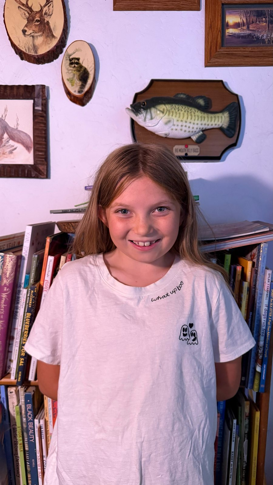
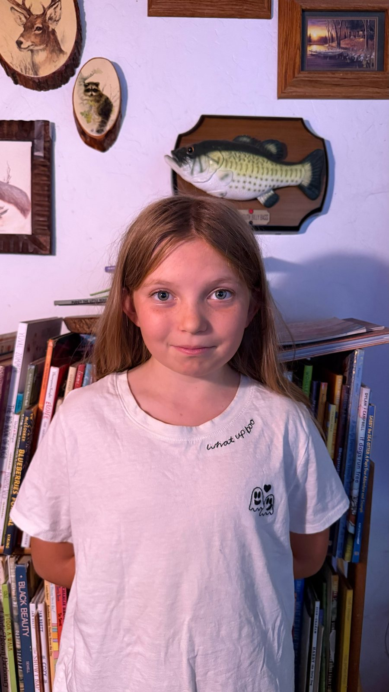
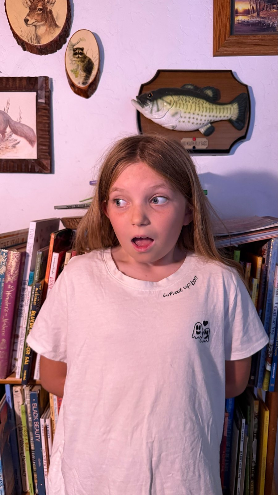
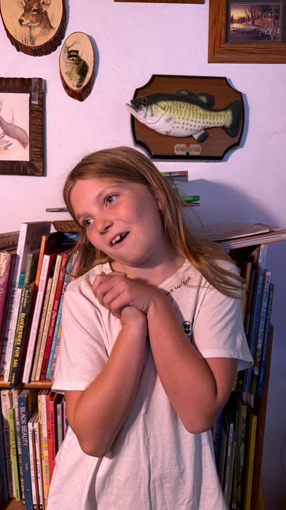
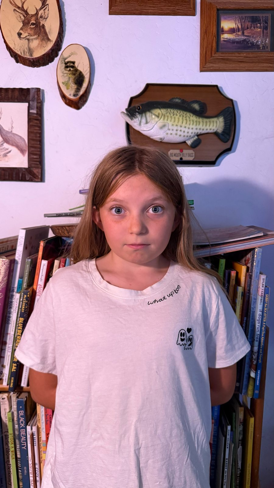
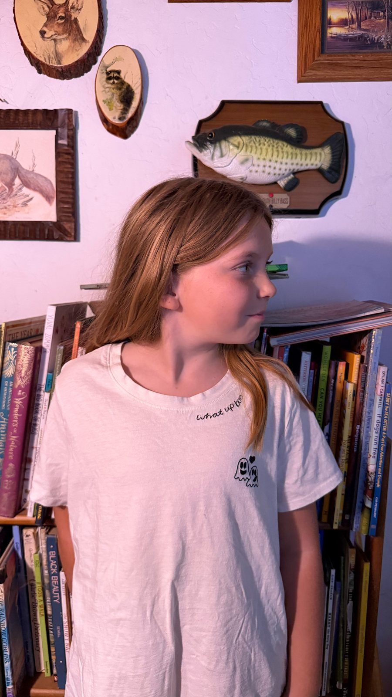
06 · On stage
Scripted theatre, musical numbers and ensemble work, filmed live in performance.
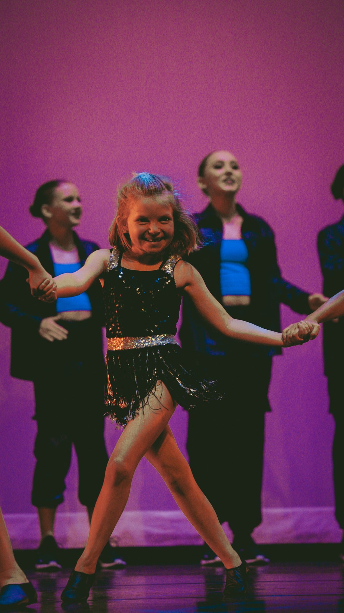
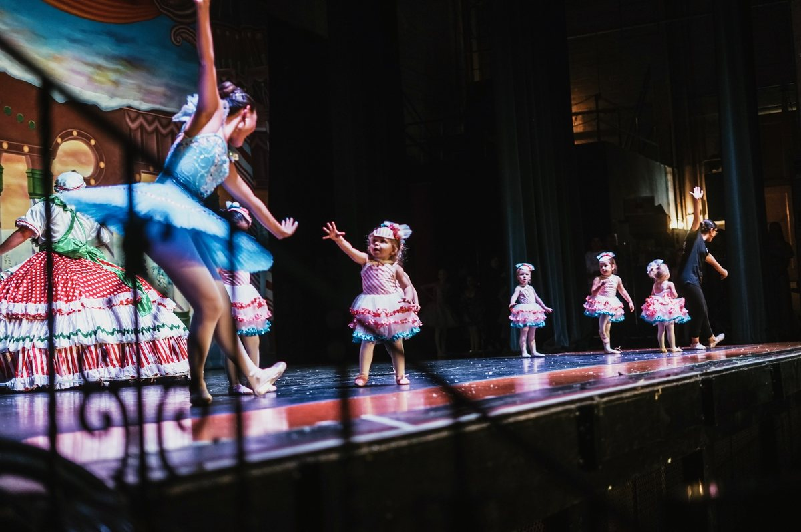
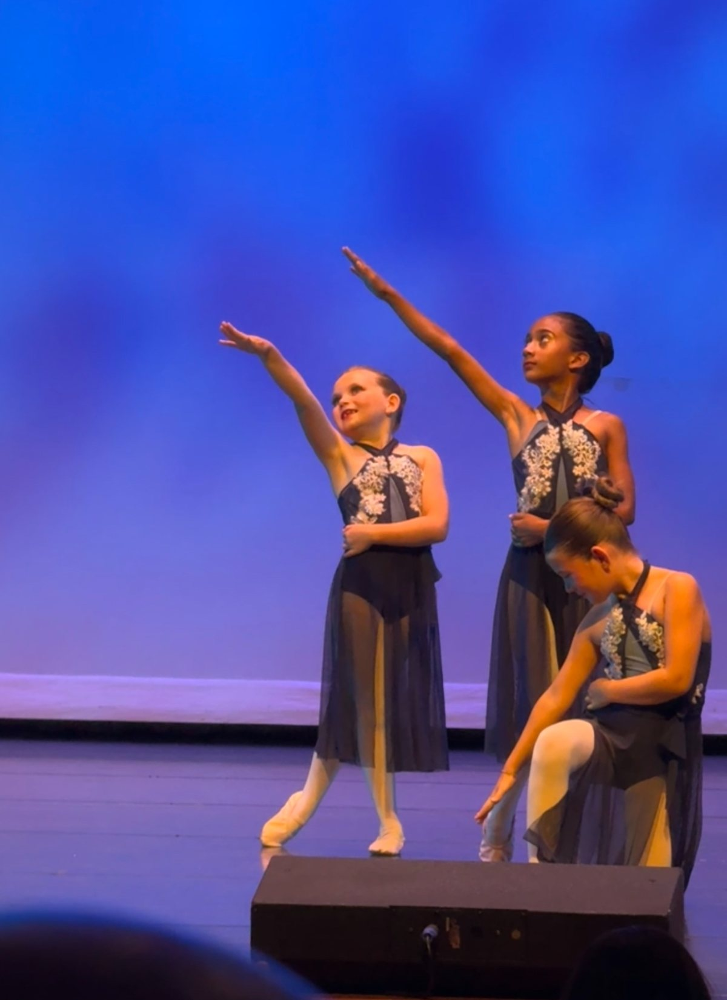
Live stage dialogue opposite Scrooge as Tiny Tim.
0:39 · The Little Town of Christmas — Golden Chain Theatre
Featured solo vocal, centre stage, with props and choreography.
0:28 · Dare To Dream — Golden Chain Theatre
Unison singing in a staged chorus.
0:20 · The Little Town of Christmas — Golden Chain Theatre
07 · Enquiries
All casting, representation and production enquiries are handled by Wynter's parent.
Kristin Pearce
Wynter's parent — all enquiries
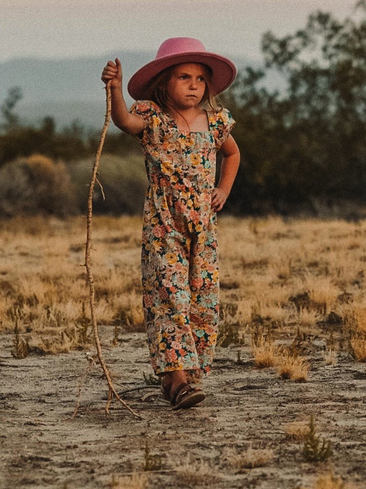
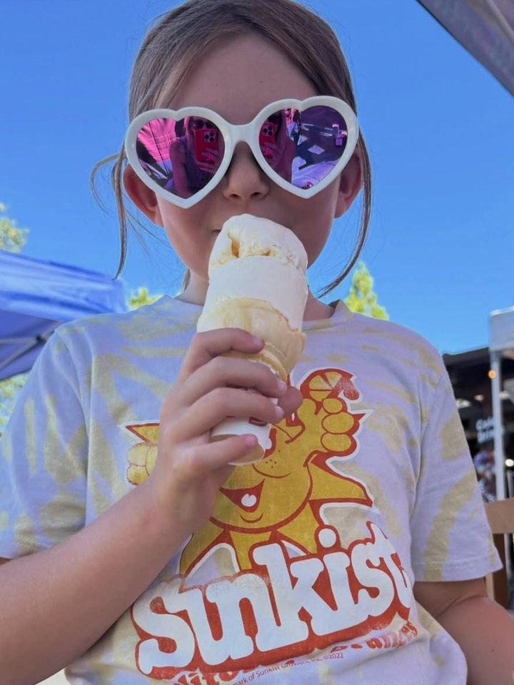
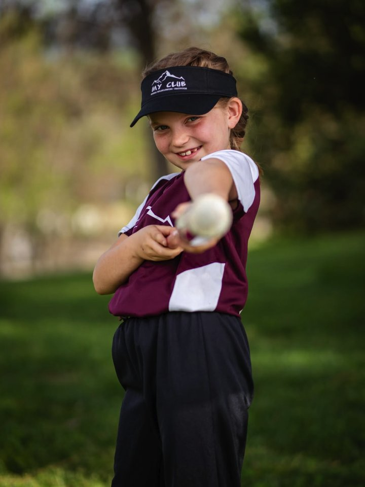
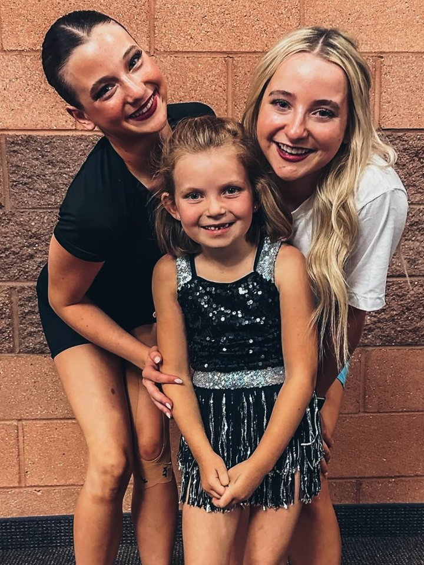